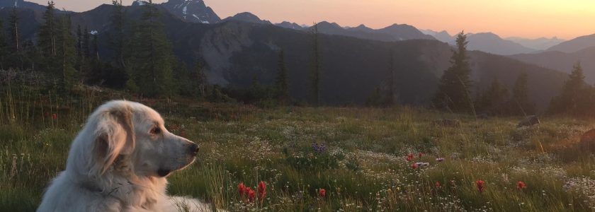

Is a Great Pyrenees right for you?
Known as the Gentle Giant, the Great Pyrenees is a loyal, even-tempered family dog who loves attention, especially from children. They're also intelligent, independent and willful. If you want an off-leash companion who follows every command, a Pyr probably isn't for you.
Size
Males 27–32 in, 100–110 lbs. Females 25–29 in, 85–100 lbs.
Lifespan
About 10–12 years, with few major genetic problems.
Shedding
Year-round, and a lot. Regular brushing helps, but it never stops.
Barking
Yes, often. They were bred to guard livestock and react to unusual noises.
Temperament
Confident, gentle and affectionate. Territorial and protective of their flock or family when necessary, but generally calm, patient and tolerant. They're strong-willed, independent and somewhat reserved, yet attentive, fearless and loyal to their charges, human and animal.
Are they aggressive guard dogs?
No. They normally accept anyone you invite into your home, though their size can intimidate first-time visitors. Properly socialized Pyrs aren't attack dogs and are usually very responsible with their guarding instincts, though they do have guardian instincts against predators.
They roam
Pyrs have a natural tendency to roam, so when they're outside, all gates must be closed and locked. That's why we require secure fencing.
Puppies need adult dogs
Pyrs learn their role from other dogs, not from people. Even livestock guarding is taught by older dogs. They're not "people pleasers" like Retrievers or Labs. Without proper socialization as puppies, they can become very difficult teens and adults.
What they look like

Head: skull width and length about equal. Rich dark brown almond-shaped eyes with black rims, and a black nose and lips. Ears: small to medium blunted triangles, carried low and blending into the ruff. Tail: carried low at rest, over the back or low in motion. A "shepherd's crook" kink is acceptable. Coat: double-coated, with a flat, thick, coarse outer coat and a woolly undercoat that grows in the fall and sheds in spring. Color: all white, or white with markings of gray, badger, reddish brown or tan.
Read more from the American Kennel Club.
Training tips
- Get a professional. Find a certified trainer or behaviorist familiar with livestock guardian or large breeds who uses only positive reinforcement. Peaceable Paws has articles and trainer referrals.
- Use a harness, not a collar. A sturdy, well-fitted no-pull harness protects their strong necks. Never use prong or shock collars. They can trigger instinctive defensive behavior.
- Be consistent. Set clear rules and respond to unwanted behavior the same way every single time.
- Meet on neutral territory. Introduce new dogs on leash, in a calm, secure area where neither dog has established boundaries.
- Stay calm. Use a calm voice and slow movements, ignore jumping, and redirect with commands.
Sound like your kind of dog?
Meet the Pyrs and Pyr mixes waiting in foster homes right now.